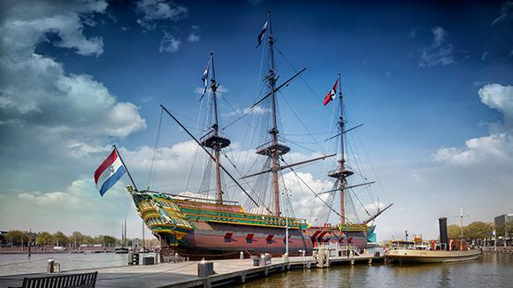

Tentoonstellingen




De collectie van Het Scheepvaartmuseum is één van de grootste en meest vooraanstaande maritieme collecties ter wereld, waaronder schilderijen, scheepsmodellen, navigatie-instrumenten en wereldkaarten. Ontdek 500 jaar Nederlandse maritieme geschiedenis en ervaar hoe sterk deze verbonden is met de samenleving van vandaag en van de toekomst.